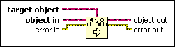

Preserve Run-Time Class Function
Owning Palette: Cluster, Class, & Variant VIs and Functions
Requires: Base Development System
Checks at run time whether object in is of the same class as, or is a child class of, target object.
Use this function on the block diagram of a subVI when you want to guarantee that LabVIEW downcasts a LabVIEW class output of the subVI node to the same class type as a LabVIEW class input when the subVI receives a child class of the expected input type.

 Add to the block diagram Add to the block diagram |
 Find on the palette Find on the palette |